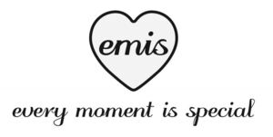

Trade Mark Journal No.2025/037 12 September 2025
WO0000001849016 (3,9,14,18,25,26,35)
Office of origin: Republic of Korea
Date of International Registration:18 December 2024
Date of designation in the UK:
18 December 2024

International priority date claimed: 1 August 2024
(Republic of Korea)
(4020240143141)
International priority date claimed: 1 August 2024
(Republic of Korea)
(4020240143142)
International priority date claimed: 1 August 2024
(Republic of Korea)
(4020240143143)
International priority date claimed: 1 August 2024
(Republic of Korea)
(4020240143144)
International priority date claimed: 1 August 2024
(Republic of Korea)
(4020240143145)
International priority date claimed: 1 August 2024
(Republic of Korea)
(4020240143146)
International priority date claimed: 1 August 2024
(Republic of Korea)
(4020240143147)
- Class 3
- outdoor air fresheners [fragrant preparations]; scented sachets; air fresheners [fragrant preparations] for use in cars; refills for electric room fragrance dispensers; perfuming sachets; fragrances; wax melts, scented; room fragrance spray; air fragrancing preparations; incense sticks; fragrance refills for nonelectric room fragrance dispensers; fragrances for cars; reed diffusers; aromatic oils; aromatic essential oils; perfumes; cosmetics; hair dyes for pets; cleaners for pet beds; non-medicated cleansers for pet ears; non-medicated pet conditioners; nail polishes for pets; pet stain removers; pet shampoos [non-medicated grooming]; non-medicated pet mouthwashes; pet toothpaste; pet deodorizers; deodorants for pets; bath preparations for pets; cosmetic dyes for pets; pet cosmetics [cosmetics for animals]; pet soaps; non-medicated pet rinses; shampoos; hair conditioner; make-up remover; cosmetics and make-up; nonmedical mouthwashes; pre-moistened cleansing tissues; lip balm; toiletries; essential oils; soaps for personal use.
- Class 9
- Eyeglasses; sunglasses; cases for eyeglasses and sunglasses; straps for eyeglasses and sunglasses; hand straps for smartphones; cases for smartphones; smartwatches; downloadable multimedia files; downloadable electronic gift certificates; non-medical air filtration masks.
- Class 14
- Shoe jewellery; earrings; statues of precious metal and their alloys; tie-pins of precious metal; necklaces coated with precious metal; key chains of precious metal; jewelry plated with precious metals; jewelry boxes of precious metals; cuff links of precious metal; bracelets of precious metal; trophies coated with precious metal alloys; diamonds; necklaces [jewelry]; rings [jewelry]; jewelry and precious metals; brooches [jewelry]; gift watch cases [watch cases for gifts]; wristwatches; women's jewelry; pendants [jewelry].
- Class 18
- Cosmetic cases, empty; animal skins; artificial leather; leather bags; leather wallets; diaper bags; backpacks; briefcases; shoulder bags; baby carriers worn on the body; women's handbags; travel bags; garment bags for travel; key wallets; wallets; card wallets; handbags; boxes of leather or leatherboard; umbrellas; coats for cats; pet harnesses; dog clothing; raincoats for pets; leather leashes; dog leashes; animal wraps and covers; collars for cats; collars for dogs; bags for carrying pets; hair accessories for pets, namely, hair bows for pets and head collars for pets; collars and leashes for dogs; pet covers [animal covers]; pet boots; collars for pets; clothing for pets; dog shoes; muzzles.
- Class 25
- Clothing; sandals; shoes; infants' shoes; swimsuits; sports shirts; golf shirts; newborn's clothing; women's coats; one-piece dresses; infants' pants; shirts; sweaters; pajamas; panties; mufflers; socks; hats; belts for clothing; waterproof jackets.
- Class 26
- Buttons; hair ornaments, not of precious metal; shoe ornaments not of precious metal; badges for wear, not of precious metal; belt ornaments, not of precious metal; spangles for decoration; brooches as clothing accessories; birds' feathers as clothing accessories; shoulder pads for clothing; trimmings for clothing; decorative ribbons; hairbands; artificial corsages; embroidery for garments; heat adhesive patches for decoration of clothing; buckles for clothing accessories.
- Class 35
- Retail store services in relation to collars for pets; retail store services in relation to pet toys; retail store services in relation to pet mattresses; retail store services in relation to tissue box covers; retail store services in relation to clothing for pets; retail store services in relation to cups; retail store services in relation to bags for carrying pets; retail store services in relation to tableware for pets; retail store services in relation to furniture; retail store services in relation to cushion; retail store services in relation to jewellery and precious metals; retail store services in relation to umbrellas; retail store services in relation to footwear; advertising and promotional services; promoting the goods and services of others by means of operating an on-line comprehensive shopping mall; business intermediary services relating to mail order by telecommunications; retail store services in relation to clothing; retail store services in relation to belts for clothing; retail store services in relation to socks; retail store services in relation to women's jewelry; retail store services in relation to scarves; retail store services in relation to gloves as clothing; retail store services in relation to spangles for decorations; retail store services in relation to buckles as clothing accessories; retail store services in relation to birds' feathers as clothing accessories; retail store services in relation to hats; retail store services in relation to hairbands; retail store services in relation to trimmings for clothing; retail store services in relation to brooches [jewelry] as clothing accessories; retail store services in relation to stockings; retail store services in relation to badges for wear [not for precious metal]; retail store services in relation to hair ornaments (not of precious metal); providing of online marketplace for buyers and sellers of goods and services; business management; retail store services in relation to make-up removing appliances; retail store services in relation to porcelain ornaments; retail store services in relation to empty cosmetic cases; retail store services in relation to cosmetic utensils; retail store services in relation to eyeglass frames; retail store services in relation to eyeglasses; retail store services in relation to sunglasses; retail store services in relation to straps for eyeglasses and sunglasses; retail store services in relation to wallets; retail store services in relation to bags; retail store services in relation to swimsuits; retail store services in relation to camping mats; retail store services in relation to camping furniture; retail store services in relation to kitchen containers; administrative processing of purchase orders; retail store services in relation to ornaments of plaster, plastic, wax or wood, other than Christmas tree ornaments; retail store services in relation to trash cans.
Park, Min Ju
Representative: Cleveland Scott York, 5 Norwich Street London EC4A 1DR UNITED KINGDOM